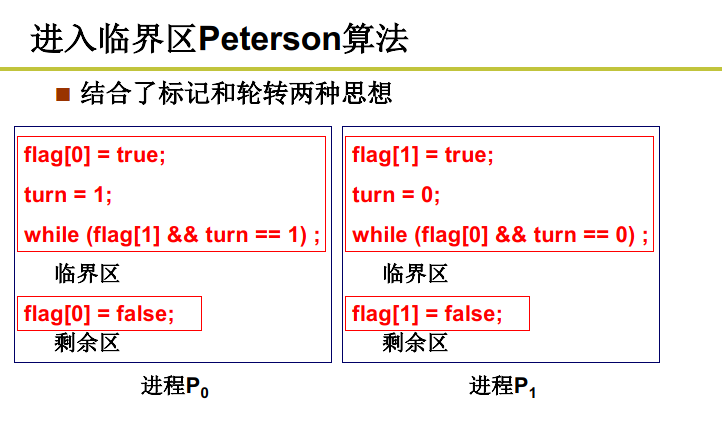
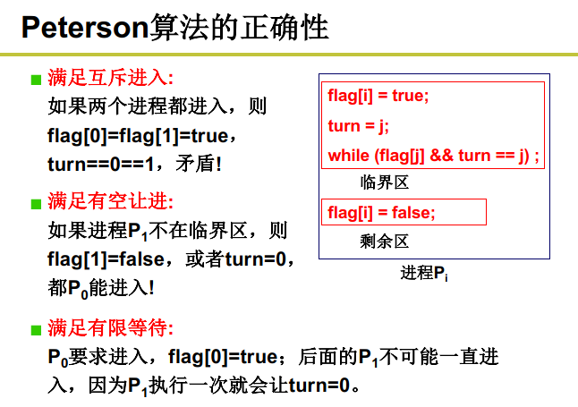
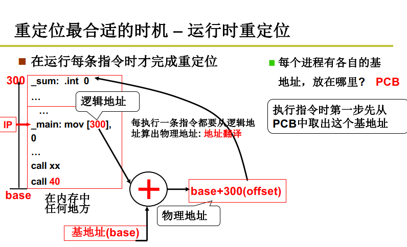

哈工大操作系统网课
操作系统
管理计算机硬件的软件系统
操作系统接口
操作系统接口。连接操作系统和应用软件，表现为一些函数。
即系统调用，接口表现为函数调用，由系统提供,所以称作系统调用。
POSIX：Portable Operating System Interface Of Unix
系统调用的实现 （System Call！）

将内核程序和用户程序隔离
区分内核态和用户态。
当前程序在什么态，由于PC—CS：IP是当前指令，所以用CS最低两位表示：0内核态，3用户态。
初始DPL = 0 、CPL = 3。
硬件提供了主动进入内核的方法，进入内核的唯一方法。int 指令使CS中的CPL更改为0，进入内核。
系统调用的核心：
- 用户程序中包含int指令的代码
- 操作系统写中断处理，获取想调程序的编号
- 操作系统根据编号执行相应的代码
学习任务
掌握CPU管理、内存管理，磁盘管理、终端设备管理。
进程、进程管理、地址（*p = 7）、虚拟内存、文件系统、文件、设备文件、设备驱动
CPU管理
工作原理：取址执行

有IO指令和无IO指令计算时间的差别
一个CPU上交替执行多个程序：并发
多进程图像
PCB：Process Control Block 用来记录进程信息的数据结构
进程调度：FIFO、Priority
内存管理的主要内容：多进程的地址空间分离
如何形成多进程图像？
- 读写PCB
- 操作寄存器完成切换
- 调度程序
- 进程的同步与合作
- 有地址映射
用户级线程
线程之间共享资源

Create？Yield？
内核级线程
用户栈 内核栈

内核级线程实现
P13 操作系统之“树”
P14 CPU调度策略
FIFO？
Priority？
如何合理的调度？
- 吞吐量和响应时间有矛盾
- 前台任务和后台任务的关注点不同
- IO密集型和CPU密集型任务有各自的特点
基本CPU调度算法
FCFS（First Come First Served）
如何降低周转时间：SJF（短作业优先）
那响应时间怎么办？RR：按时间片轮转调度，时间片大：响应时间长；时间片小，吞吐量小。
同时存在要求周转时间和响应时间两种任务？
死板的执行优先级调度会产生饥饿。
P15 一个实际的schedule函数
P16 进程同步与信号量

多个进程合理有序的向前执行，控制这个有序过程的关键是信号。
引入信号量
生产者——消费者模式

存在多个生产者时，无法唤醒其他生产者，counter无法满足要求了。

P17 信号量临界区保护
什么是信号量？
通过对这个量的访问和修改，让大家有序推进。
临界区：一段代码一次只允许一个进程进入。读写信号量的代码一定是临界区
临界区代码保护原则
基本原则：互斥进入
好的临界区保护原则：有空让进、有限等待
1.轮换法
2.标记法
3.Peterson算法


临界区保护的另一类解法
只允许一个进程进入，另一个进程进入时意味着什么？
被调度：另一个进程只有被调度才能执行，才能进入临界区，，如何阻止调度？
关中断。

原子保护法

用临界区保护信号量，用信号量实现同步
P18 信号量的代码实现
P19 死锁处理
死锁的处理方法
- 死锁预防

- 死锁避免


m-资源个数 n-进程个数，时间复杂度高
- 死锁检测+恢复

- 死锁忽略


P20 内存的使用和分段



引入分段：是将整个程序一起载入内存中吗？
P21 内存分区与分页
内存怎么分割？
固定分区与可变分区
但物理内存采用分页方式。
引入分页：解决内存分区导致的内存效率问题


内存的角度上，空间浪费少；用户的角度上，支持分段

P22 多级页表和快表


大页表占用内存，造成浪费
第一种方法，只存放用到的页
用到的逻辑页才有页表项
但是页表中的页号不连续，就需要比较、查找
时间复杂度高，时间换空间
既要连续又要让页表占用内存少，该怎么办？
用书的章目录和节目录类比思考...
第二种方法，多级页表
多级页表增加了访存的次数，尤其是64位系统
- TLB是一组相联快速存储，是寄存器
TLB命中时效率会很高，未命中时效率降低。所以TLB越大越好，但是TLB很贵，通常只有【64，1024】。
P23 段页结合的实际内存管理

先通过段号找到基址加上偏移地址后得到的是虚拟地址，需要经过映射得到页号得到物理地址。
两层地址翻译，既支持了段又支持了页。

一个实际的段、页式内存管理
内存管理核心就是内存分配，所以从程序放入内存、使用内存开始
第一步：

（linux0.11）
子进程完全拷贝父进程的页表
第二步：


第三步：能用起来

经过两次地址翻译
P24 内存换入-请求调页 swap in
之前进程也有类似的说法，好像计算机在单独的为用户进程服务。
用换入换出实现大内存
左边4G，右边1G怎么办？
从磁盘上换进来，再建立映射。请求的时候才换入才建立映射。

没有映射，缺页中断。页处理程序。
一个实际系统的请求调页
call _do_no_page, 该函数在linux/mm/memory中，申请空闲页，从磁盘读进，建立映射。
P25 内存换出 swap out


LRU的实现
- 每页维护一个时间戳timestamp，选具有最小时间戳的页淘汰。每执行一条指令都要修改时间戳，实现代价太大。
- 维护一个页码栈，选栈底页淘汰。每次地址访问都要修改栈，实现代价仍然较大。
LRU近似实现-将时间计数变为是和否
二次机会算法，是1时清0，循环一次后仍然是0则淘汰。
P26 IO与显示器
给外设对应的控制器写内容，然后控制器控制外设。

向设备控制器的寄存器直接写不就行了？
需要查寄存器地址、内容的格式和语义...操作系统要给用户和提供一个简单视图——文件视图这样方便。

P27 键盘
如何使用键盘？
使用者：敲键盘、看到结果
操作系统：“等着”敲键盘、敲了就中断
inb、outb

P28 生磁盘的使用
让磁盘用起来

- 磁盘的访问单位是扇区
- 扇区大小：512字节
- 扇区的大小是传输时间和碎片浪费的折衷
简化抽象
操作系统希望上层用户使用下层更加简单高效
扇区越大访问速度越快，于是用空间换时间

FCFS磁盘调度算法
谁先来先调度
SSTF磁盘调度
Shortest-seek-time
短寻道优先
SCAN磁盘调度
SSTF+中途不回折：每个请求都有处理机会
C-SCAN磁盘调度（电梯算法）
SCAN+直接移到另一端：两端的请求都能很快处理

P29 从生磁盘到文件
从文件怎么得到盘块号
为什么引入文件？
File control block
连续结构类似数组，在面对连续增删改时表现不佳
适合动态增长，存取起来慢
Index，既适合增长，读写也不慢
P30 文件使用磁盘的实现
P31 目录与文件系统

如何根据路径名找到文件的FCB
要使整个系统能自举，还需要其他信息
- inode位图：那些inode空闲，哪些被占用
- 盘块位图：哪些盘块使空闲的，硬盘大小不同这个位图大小也不同
- 空闲位图
- 超级快
P32 目录解析代码实现
- 读取inode——iget
- 开始目录解析——find_entry